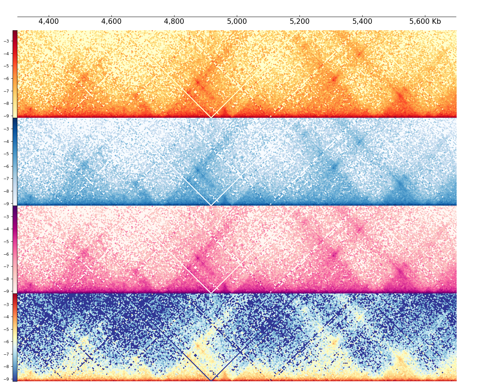
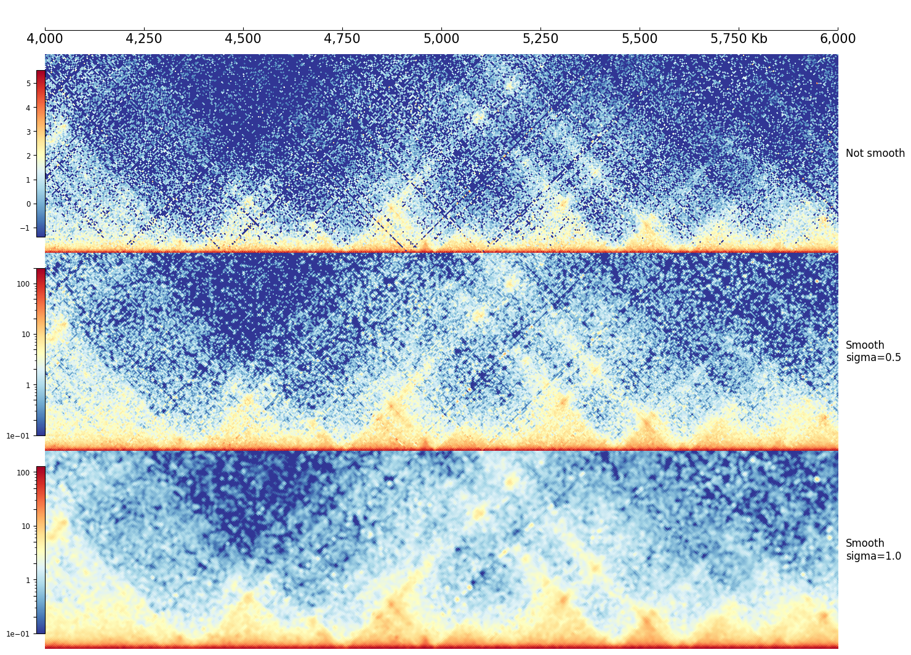
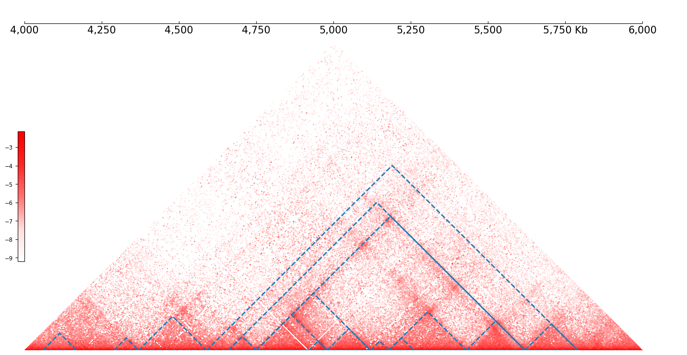
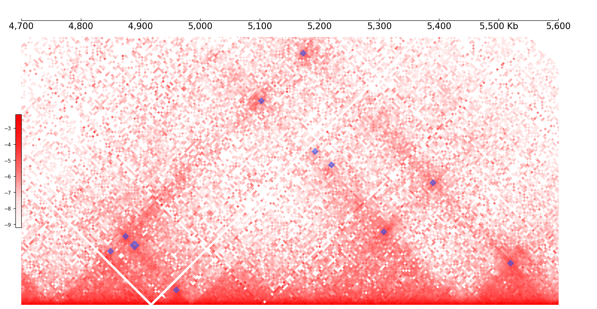
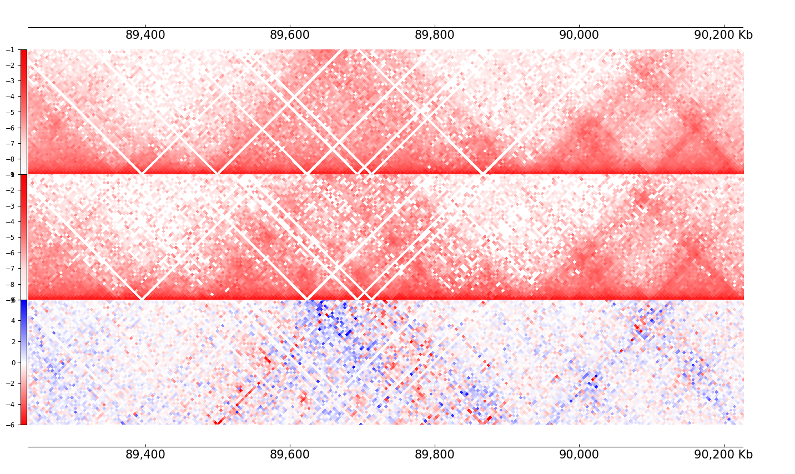
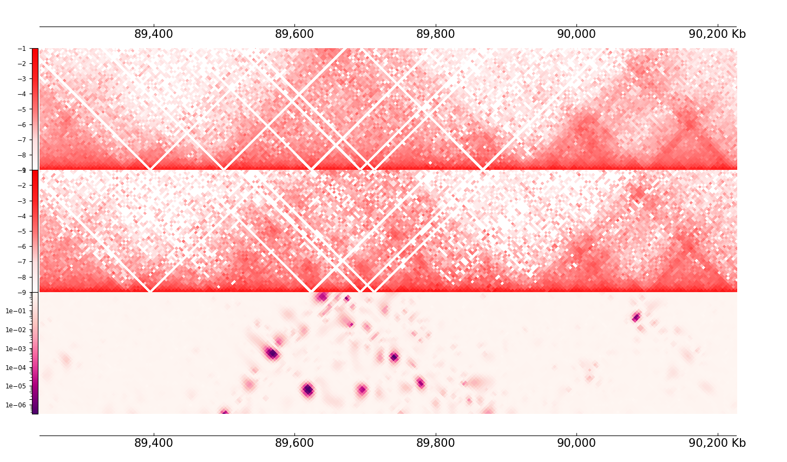
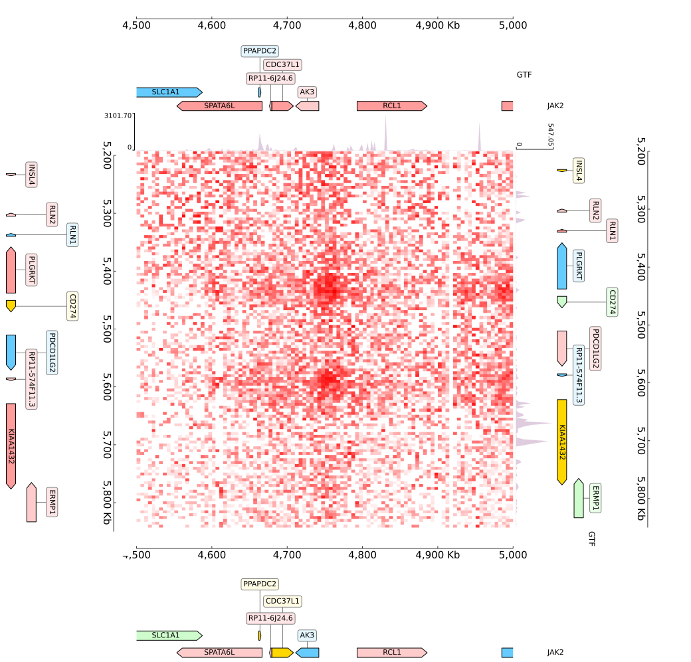

CoolBox Gallery
Hi-C

Colormaps of Hi-C contact map

Resolution, Balance and Normalize

Smoothing matrix with gaussian filter

Hi-C features like Virtual4C, DiScore, InsuScore

TADs

Peak Coverage

Hi-C Diff

Differential Chromatin Interaction

JointView
Others

Auxiliary functions